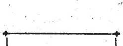
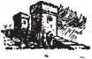

Riches OR Ruin Which Is Your Choice?
explained In Two Bible Treatises by
J. F. RUTHERFORD
Page . '
2 Foreword
3 Separating the Nations
85 Your Choice
FOREWORD ------
Of all the nations two separate and distinct companies are now being formed. One of these companies will become exceedingly rich. The other company will suffer complete ruin. You are certain to take a course of action that will put you in one of those two companies, and you should know which company to choose. It is of greatest importance to you that you read carefully this small book, which will enable you to make an intelligent choice. The first part of it was broadcast by radio to millions of persons. The latter part has been prepared especially to aid those who desire to partake of boundless riches. Encourage your neighbors to read it.
Copyrighted 1936 and Published by
WATCH TOWER BIBLE AND TRACT SOCIETY International Bible Students Association Brooklyn, N. Y., U. S. A. Made in the United States of America
Judge Rutherford’s world-wide hookup from
Shrine Auditorium, Los Angeles, Calif., February 23, 1936
MORE than nineteen centuries ago there was on the earth the only great man that ever lived, and whose name is Jesus. Changed from spirit to human by the power of Almighty God, he was sent to the earth to tell the truth in vindication of Jehovah God’s name. He spoke with absolute authority, because his speech was ordered by Jehovah. His words are recorded in the Bible and disclose God’s purpose.
Today I speak to this audience from God’s Word and utter not the wisdom of man. To those who believe on God and Christ Jesus and that the Bible is the truth, and who desire to know and to do the will of God, this speech is addressed. The Bible, together with the well-known facts, will convince you that my speech is true. A controversy I do not seek, but the truth of God’s Word always provokes his enemies to wrath.
Jehovah’s chief enemy is Satan the Devil, who for centuries has attempted to turn all men away from God and into destruction. It is the expressed will of God that the people now hear the truth, that they may intelligently choose their own destiny. (Isaiah 43: 9,10) My obliga-3
tion is to tell this message, and then it is your obligation to choose. When a great storm is threatened the government warns the people. When a crisis is due on the world God gives warning to the people, that those of good will toward him may flee to the place of safety. God used Noah to give warning of the approaching flood. (2 Peter 2:5) He used Jesus and other prophets to sound the warning of the impending doom of Jerusalem, and now Jehovah uses a company of witnesses to give warning of the final tribulation, which is here and which is preceded by the separation of the nations. That separation is now in progress, as you will see from the evidence produced here today.
That you may properly appreciate the extraordinary conditions prevailing today, it is necessary to recount some of the most important events of the past. Know this, that Jehovah is the true and supreme God. (Psalm 83:18) Christ Jesus his Son is the Savior of man, the rightful Ruler of the world, and the Vindicator of Jehovah’s name. (John 10:36; Revelation 1: 5; 17:14) For centuries Satan, by permission of Jehovah, has been the invisible ruler of the world, and that uninterrupted rule is now come to an end. In ruling the world Satan has always employed three factors among men, to wit, religionists, commercial traffickers, and politicians, and by these he has kept the people under control. Jesus was never a religionist, but always obeyed Jehovah God. When the man Jesus began to proclaim the truth Satan endeavored to trap him and to cause his destruction. Jesus steadfastly resisted and said to the Devil (Matthew 4:10): “It is written, Thou shalt worship the Lord thy God, and him only shalt thou serve.”
Then Satan employed all the factors of selfish men to contradict, annoy and persecute Jesus, and the leaders in that persecution were religionists. (Luke 23:10, 23; John 19: 6,15, 21) What came to pass on Jesus then has befallen every person who since then has faithfully followed in his steps, even as Jesus foretold. (John 15:19-21) The persecutors of Jesus falsely claimed to be the servants of God. Jesus told them that they were hypocrites, liars, and the children of Satan. (John 8:13,42-44) That truthful speech of Jesus greatly angered the religionists, and they immediately sought the aid of the commercial traffickers and the politicians and the mob, to bring about the death of Jesus. They falsely charged Jesus with the crimes of sedition and treason against the state, produced false witnesses, held a mock court trial, during which the religionists demanded the lifeblood of Jesus, and the political rulers sent that righteous One to an ignominious death to gratify the bloodthirsty religionists., \Luke 23:1-25) All who were against Jesus were on the Devil’s side.
Just before his death Jesus uttered certain prophecies to his disciples, which prophecies are sure of fulfillment. He told them that he would be put to death because he told the truth; that God would resurrect him; that he must go away and receive his kingdom, and that in due time he would come again and rule the world.
Since then every true follower of Christ Jesus has looked forward to the coming of Christ and his kingdom. Keenly desiring to know when that time would come his disciples asked Jesus what would be the proof of his coming and the end of Satan's uninterrupted rule. (Matthew 24:3) The answer of Jesus was true, and when we see that the things have now come to pass, which he declared would be proof of his coming, we are certain that his prophecies are fulfilled.
Jesus answered that the first evidence that he had taken his power would be the anger of the nations, expressed in the World War, and that would be followed quickly by famine and pestilence. (Revelation 11:17,18; Matthew 24:7,8) The facts known to all show that the prophecy began to have fulfillment in 1914. Other proof Jesus said would be that the nations would be in distress and' perplexity and men’s hearts failing them for fear. (Luke 21:25) That condition has prevailed particularly since the close of the World War. He also said that the Devil would bring great sorrow upon the people to turn them away from God. (Revelation 12:12) That prophecy is fulfilled before your eyes. Never has there been such woe on earth as now. The true followers of Christ Jesus are therefore not looking for the coming of the Lord and the end of the world, because such is an accomplished fact. The world has ended and Christ Jesus has come. Soon he will destroy Satan and all the wicked ones, and he commands that the people now be so informed, that they may seek safety before the greatest of all tribu-
FOREWORD ------
Of all the nations two separate and distinct companies are now being formed. One of these companies will become exceedingly rich. The other company will suffer complete ruin. You are certain to take a course of action that will put you in one of those two companies, and you should know which company to choose. It is of greatest importance to you that you read carefully this small book, which will enable you to make an intelligent choice. The first part of it was broadcast by radio to millions of persons. The latter part has been prepared especially to aid those who desire to partake of boundless riches. Encourage your neighbors to read it.
Copyrighted 1936 and Published by
WATCH TOWER BIBLE AND TRACT SOCIETY International Bible Students Association Brooklyn, N. Y., U. S. A.
Made in the United States of America
Judge Rutherford’s world-wide hookup from
Shrine Auditorium, Los Angeles, Calif., February 23, 1936
MORE than nineteen centuries ago there was on the earth the only great man that ever lived, and whose name is Jesus. Changed from spirit to human by the power of Almighty God, he was sent to the earth to tell the truth in vindication of Jehovah God’s name. He spoke with absolute authority, because his speech was ordered by Jehovah. His words are recorded in the Bible and disclose God’s purpose.
Today I speak to this audience from God’s Word and utter not the wisdom of man. To those who believe on God and Christ Jesus and that the Bible is the truth, and who desire to know and to do the will of God, this speech is addressed. The Bible, together with the well-known facts, will convince you that my speech is true. A controversy I do not seek, but the truth of God’s Word always provokes his enemies to wrath.
Jehovah’s chief enemy is Satan the Devil, who for centuries has attempted to turn all men away from God and into destruction. It is the expressed will of God that the people now hear the truth, that they may intelligently choose their own destiny. (Isaiah 43: 9,10) My obliga-3 tion is to tell this message, and then it is your obligation to choose. When a great storm is threatened the government warns the people. When a crisis is due on the world God gives warning to the people, that those of good will toward him may flee to the place of safety. God used Noah to give warning of the approaching flood. (2 Peter 2:5) He used Jesus and other prophets to sound the warning of the impending doom of Jerusalem, and now Jehovah uses a company of witnesses to give warning of the final tribulation, which is here and which is preceded by the separation of the nations. That separation is now in progress, as you will see from the evidence produced here today.
That you may properly appreciate the extraordinary conditions prevailing today, it is necessary to recount some of the most important events of the past. Know this, that Jehovah is the true and supreme God. (Psalm 83:18) Christ Jesus his Son is the Savior of man, the rightful Ruler of the world, and the Vindicator of Jehovah’s name. (John 10:36; Revelation 1: 5; 17:14) For centuries Satan, by permission of Jehovah, has been the invisible ruler of the world, and that uninterrupted rule is now come to an end. In ruling the world Satan has always employed three factors among men, to wit, religionists, commercial traffickers, and politicians, and by these he has kept the people under control. Jesus was never a religionist, but always obeyed Jehovah God. When the man Jesus began to proclaim the truth Satan endeavored to trap him and to cause his destruction. Jesus steadfastly resisted and said to the Devil (Matthew 4:10): “It is written, Thou shalt worship the Lord thy God, and him only shalt thou serve.”
Then Satan employed all the factors of selfish men to contradict, annoy and persecute Jesus, and the leaders in that persecution were religionists. (Luke 23:10, 23; John 19: 6,15, 21) What came to pass on Jesus then has befallen every person who since then has faithfully followed in his steps, even as Jesus foretold. (John 15:19-21) The persecutors of Jesus falsely claimed to be the servants of God, Jesus told them that they were hypocrites, liars, and the children of Satan. (John 8:13,42-44) That truthful speech of Jesus greatly angered the religionists, and they immediately sought the aid of the commercial traffickers and the politicians and the mob, to bring about the death of Jesus. They falsely charged Jesus with the crimes of sedition and treason against the state, produced false witnesses, held a mock court trial, during which the religionists demanded the lifeblood of Jesus, and the political rulers sent that righteous One to an ignominious death to gratify the bloodthirsty religionists. "(Luke 23:1-25) All who were against Jesus were on the Devil’s side.
Just before his death Jesus uttered certain prophecies to his disciples, which prophecies are sure of fulfillment. He told them that he would be put to death because he told the truth; that God would resurrect him; that he must go away and receive his kingdom, and that in due time he would come again and rule the world. crisis, which involves all men. It is the time of great peril. In order that intelligent people may understand that this is a time of peril the Lord makes known what conditions will prevail at this time. It is therefore written, at 2 Timothy 3:1-5: ‘Know this, that in the last days [of Satan’s world] perilous times shall come; for then men shall be extremely selfish, boasters, proud,' contract-breakers, false accusers, despisers of those that are good; lovers of pleasure more than lovers of God; having a form of godliness, but denying the power thereof.’ Such persons attribute power and salvation to things, and not to Almighty God. The condition described by this scripture is exactly what exists in every nation on earth today. The Lord caused these things to be recorded in the Bible to aid us to see that the time of separation of the nations is here.
America was established as a place of freedom for the worship of Almighty God, but now after many centuries of such freedom the Devil employs religionists to introduce the practice of the formal ceremony of flag-saluting, thereby attributing salvation to a thing or power made by men. Such is a form of godliness, but denies the power of Jehovah God, who alone can save.
As further evidence of the presence of Christ and his work of separating the nations, note that he said (Matthew 24: 37-39): “But as the days of Noah were, so shall also the coming of the Son of man be. For as in the days that were before the flood, they were eating and drinking, marrying and giving in marriage, until the day that Noah entered into the ark, and knew not, until the flood came, and took them all away; so shall also the coming of the Son of man be.”
True to this prophecy, practically all organizations of men have gone pleasure-mad, and a Jesuit religionist is assigned to arbitrarily determine what motion pictures shall be used for the amusement and pleasure of the people, and, when opportunity is afforded, a religious organization is exalted and the name of God defamed by such pleasure pictures. As the prophecy foretold, the peoples eat and drink, and in all manner indulge their selfish appetites, and at the same time they ridicule the name and word of God. Religious organizations are not for Jehovah God and his kingdom, but they join hands with commercial traffickers and with the political rulers to oppose those who tell the truth of and concerning God’s kingdom; and concerning such opposers Jesus says (Matthew 12:30): “He that is not with [for] me is against me.” In Noah’s day the people were warned of the approaching flood, but they acted in defiance of God and his warning. Like conditions exist today, and all the nations act in defiance of God’s law. Some of the nations, such as Russia and Germany, openly defy God, and in all the nations the witnesses of Jehovah are hated for his name’s sake. (Matthew 24:9) In all of these nations, however, there are those people who have a good will and honest heart toward God and his kingdom, and such people Of good will were pictured by Noah and the members of his family, who remained true to Jehovah God.
The Bible was written expressly, as therein stated, to instruct and guide men in the right way, that they might receive God’s approval. (2 Timothy 3:16,17) There is no other sure guide. (Psalm 119:105) The nations of “Christendom” have had full access to the Bible and are in an implied agreement to be guided by it; but religionists have so misrepresented the Bible that the masses of the people have turned away from and contemptuously ignore it. It was exactly that way before the flood, and also just before the destruction of Jerusalem. Israel was the only nation on earth with which God made a covenant. (Amos 3:2) The priestly class was commanded by the Lord to instruct the people in his Word and to lead them in his true worship. (Malachi 2:7) Those teachers abandoned God’s Word, became religionists, and substituted their own religious ceremonies in the place of the true worship of God, and such men are known as Pharisees. The Lord Jesus denounced them as hypocrites and instruments of the Devil. The most scathing denunciation ever leveled against men is that by Jesus spoken against those Pharisees, as set forth in the twenty-third chapter of Matthew. Jesus told them that they were the representatives of the Devil, although they claimed to represent God. (John 8:13, 44) His words of truth angered those religionists, and for that reason they cruelly persecuted Jesus and brought about his death. If the man Jesus were on earth today and uttered the same words of truth against hypocritical religionists they and their allies would charge him with the crimes of sedition and treason. Everyone knows that today it is the religionists who lead in the denunciation and persecution of the men and women who have devoted themselves to proclaiming the truth of and concerning the kingdom of God. Such religionists are being made manifest, and the Lord is separating them from others and putting them on his left-hand side.
LIES
Jehovah by his prophet foretold that there would arise a religious organization which would grow and prosper and that in these last days it would have and exercise great influence, rule and power with the commercial traffickers and' political rulers, and would dominate and oppress the people and would continue to do so while the Lord’s work of separating the nations progresses. The Scriptures state that such reli-gionists'would claim to serve God but in truth and in fact are the servants of God’s enemy Satan ; that they would be arrogant, boastful, oppressive and scornful, and that in the end such religious organization would suffer destruction at the hand of the Lord, and that the people must be told these facts. Concerning that religious organization, Jehovah uses, at Isaiah 28, these words: ‘Wherefore hear the word of the Lord, ye scornful men, that rule this people which is in Jerusalem: Because ye have said, We have made a covenant with [or authoritative declaration concerning] death, and with hell have effected a vision, the scourge will not reach us, for we have made lying our refuge, and in falsehood we have hid ourselves, . . . ye shall be trodden down.’ {Rotherham) This authoritative prophecy of Jehovah must have fulfillment, and I submit the indisputable evidence that you may see that it is now fulfilled.
A lie is a statement which purports to be true but which is false, the telling of which works injury to others. Your attention is called to some of the doctrines taught by religionists, and which you will see exactly fit and fulfill this prophecy. The Scriptures declare that all lies proceed from the Devil and that those who indulge in telling lies are the offspring of the Devil. Jehovah said to Adam: Tn the day you sin you shall surely die.’ (Genesis 2:17) “The wages of sin is death.” (Romans 6:23) Immediately thereafter Satan told Eve and Adam (Genesis 3:1-5): ‘Ye shall not surely die, but if you disobey God you will become as wise as he is.’ That statement of Satan was the first great lie and the breeder of all other lies, and resulted in the death of Adam and the suffering and death of men from that day till now.'
There is a great religious organization that for centuries has based practically all its teaching upon the first great lie of Satan just stated, as you will see. That religious organization teaches that every man has an immortal soul and that therefore there is no death; that when one is supposed to die his soul goes immediately to “purgatory”, and later may go to heaven or hell. This is taught by that organization in the face of God’s Word, which says (Genesis 2:7; Ezekiel 18:4): ‘Man is a soul,’ and every breathing creature is a soul, and “the soul that sinneth, it shall die”.
That religious organization teaches the false doctrine that millions of people are now in “purgatory” undergoing painful suffering and that preachers of that religious organization can, by their prayers, shorten the period of suffering in “purgatory”. That doctrine has worked great injury to millions, causing them to give to clergymen their hard-earned money in an effort to get their loved ones out of “purgatory”, when in fact, as the Bible shows, no one is in “purgatory”. That same religious organization teaches that Christ Jesus built his church upon the apostle Peter and that since then other men have, at regular periods, succeeded Peter in office; whereas the Scriptures plainly teach that God through Jesus built the church upon Christ, the true foundation Stone, and that Peter has no successor. (Matthew 16:18; 1 Peter 2:3-8; Ephesians 2: 20-22) That same religious organization tells the people that the one man, who is the head of said organization, has sole authority to interpret or tell the meaning of the Scriptures; whereas the Bible says that no scripture is of private interpretation. (2 Peter 1:20,21) That same religious organization claims to represent Christ on earth, and at the same time participates in the politics of every nation on earth, and does so in the face of Jesus’ plain declaration: “My kingdom is not of this world.” (John 18:36; James 4:4) These scriptures and the facts show that the religious organization mentioned does not have the approval of God and Christ. You must decide whom you will believe, whether selfish men or the Lord Jesus Christ.
INQUISITION
Some history is here very important to consider. That same religious organization, that teaches Satan’s lies I have just mentioned, long ago instituted and carried on in Europe and on the American continent a cruel and wicked inquisition, the purpose of which was to compel the people to be submissive to the arrogant men controlling that religious organization. The independent men and women who tried to serve God and Christ Jesus as the Bible teaches were by that court of inquisition charged with heresy, and all manner of torture was applied to compel them to confess their “heresy” and to be submissive to the religious organization. Some of the means of torture employed by the Inquisition were these: The victim’s feet were seared with red-hot irons; he was required to put on an iron boot, which was poured full of hot lead; the victim was placed in a machine which pulled his joints apart, or was put in a machine with knives that cut his flesh into shreds. Says the Encyclopedia Britannica: Two features of the Inquisition were prominent, to wit: The suppression of freedom of speech, and the destruction of books that attempted to explain the Bible. All books were censored by theTiishops, and anything explaining the Bible was suppressed in order to keep the people in ignorance of God and his Word. Any lawyer who dared appear in defense of one charged with heresy was also held guilty of heresy, and therefore the oppressed were left without counsel, aid or defense. The recorded evidence of the Inquisition proves beyond all doubt that the religious organisation mentioned was ever against God and his kingdom and on the side of the Devil.
Because of the oppression inflicted by religionists our forefathers fled to the wild shores of America and out of primitive forests cut a nation that would afford them refuge from oppression. Those honest men saw to it that the fundamental law of the Colonies contained this provision: *We hold these truths, that all men have a natural and indefeasible right to worship Almighty God according to the dictates of their own conscience.’ Such is the fundamental law of all the states and the nation. Now, after a period of more than 150 years, that same religious organization I have mentioned as teaching false doctrines, again, in this land of freedom, revives wicked persecutions of true worshipers of God. In many countries of Europe the people are denied the right to study the Bible and worship God. In Germany thousands of men now languish in filthy prisons because they have insisted on their right to come together and study the Bible and worship Almighty God. All manner of cruel torture is inflicted upon those persons. Men and women are forcibly sterilized to satisfy the beastly desires of those religionists. Many of them are beaten into insensibility because they decline to yield to the demand of the religionists who attribute salvation to a man and
not to God. Because the people possess the Bible and books explaining the Bible they are thrown into prison and tortured, and the Bible and their books are burned. The cruel Inquisition has been revived. In Quebec, South Africa, New Jersey and other places, at the instance of the same religionists, men and women are charged with sedition because they attempt to place in the hands of the people books explaining the Bible. In some of the states laws have recently been enacted, at the instance of these same religious organizations, making it a crime punishable by long term in prison to possess and use a phonograph record, or to make a speech, or to rent a x hall for that purpose, or to use the radio or any other means, for telling the truth.of God’s Word, which truth might expose to view the crookedness of that religious organization.
Jehovah’s witnesses are not a cult or sect. They are the true followers of Christ Jesus and worshipers of Almighty God by serving him in obedience to his commandment. Having agreed to do God’s will, they are diligent at all times to obey his law. The purpose of Jehovah in having witnesses on the earth at this time is not to convert the world, but the purpose is to bear testimony to the people, informing them of God’s purpose and warning them against present dangers. God’s kingdom is the only hope of salvation for mankind, and, the Kingdom now having come, the Lord sends his witnesses forth amongst the people to tell them the truth, commanding them in these words (Matthew 24:14): “This .gospel of the kingdom shall be preached in all the world for a witness unto all nations; and then shall the end come.” These witnesses must obey this commandment or, otherwise, lose everything at God’s hand. While the Lord Jesus proceeds with the separation of the nations these witnesses must tell the people about it as commanded. Because they tell the truth as commanded, they are now, as Jesus foretold (Matthew 24:9), 'hated in all nations for his name’s sake?
Jehovah’s witnesses do not participate in the politics of this world. They are wholly devoted to Jehovah and Christ his King. Their sole purpose is to inform the people of God’s Word, and do that without money or price or hope of earthly reward. The truth which they publish exposes the Devil and makes known the goodness of God and Christ Jesus, and for this reason they are hated by the Devil and his representatives. (Revelation 12:17) The Devil makes war against them because they serve God and because they deliver the testimony of Jesus Christ. Speaking to his followers as to what they should expect at this time, when he is separating the nations, Jesus says, at Mark 13:9: 'They shall deliver you up to the courts, and ye shall be beaten, and ye shall be brought before rulers for myjiame’s sake, and for a testimony against them.’ This prophecy of Jesus is now daily fulfilled.
Today throughout the nations Jehovah’s witnesses are grossly misrepresented and lied against, even as Jesus was misrepresented and lies were told against him. They are arrested and charged with breaking the 'peddler’s law* of the land. They are thrown into filthy prisons, where they become sick and suffer without proper food and care. They are represented before the rulers as the enemies of the government, yet they have done no harm to any man. Their efforts to use the radio to publish freely the truth to the people is greatly opposed. Their publication of the gospel of God's kingdom by means of books, sound equipment and other means calls down upon their heads the cruel wrath of others, and all this opposition and persecution is instituted and carried on at the instance of religionists. These facts are necessarily stated, in order for you to appreciate the fact of the separation of the nations that Jesus is now conducting, and the reason why. Now from the indisputable facts let us identify the persecutors and the persecuted, and then you may determine which class is on the Lord’s side.
Keep in mind always that the Devil is the opposer of God and Christ Jesus. It necessarily follows that the class of men that were against Jesus when he was on earth, that same class are against him now and therefore they are on the side of Satan. Who was it that persecuted Jesus unto death? It was the religionists of his day. What religious organization teaches, and for years has taught, the false doctrines or lies to which I have just called your attention? What religious organization created and prosecuted the fiendish Inquisition that deprived the people of their rights and inflicted torture upon millions to keep them in subjection and in ignorance of God’s Word? What religious organization for centuries deprived the people of the right to have and study the Bible? What religious organization now persecutes Jehovah’s witnesses, interferes with their use of the radio, and burns their books which explain the Bible? What great religious organization indulges in the politics and the political affairs of all the nations of the earth and attempts to rule and to control the world, while posing as the representative of Christ? It is one and the same religious organization that has done and is doing all of these things! And what religious organization is that? Down through the corridors of fifteen centuries thunders the answer, which sounds with increased intensity in this day, and the answer is, The Roman Catholic Hiebabchy, with its headquarters at Vatican City; that organization which employs secret service men and calls them “Jesuits”, to do its spying work and to manipulate all manner of commercial schemes against the interests of the people.
In money value the Roman Catholic Hierarchy is the richest organization on earth. That wealth was obtained from the common people and without rendering any valuable consideration therefor. Millions of good and sincere persons are designated by the same Hierarchy as “the Catholic population”, and those sincere people are in no wise responsible for the wrongdoing of the Hierarchy, but they must be warned in order that they may intelligently choose which side they will desire to be on. These statements are not made for the purpose of holding up anyone to ridicule. There is no expectation of doing the Hierarchy any good. These facts are now declared that you may see that we are at the time when Christ Jesus is separating the nations and that his work will disclose who is on the right side.
SIDES
The evidence conclusively shows that Christ Jesus has come and that he is upon his throne of judgment. At Matthew 25 he says: “And before him shall be gathered all nations; and he shall separate them one from another, as a shepherd divideth his sheep from the goats; and he shall set the sheep on his right hand, but the goats on .the left.” The nations are “before” Christ Jesus in this, that he is giving attention to the things of the earth and in his hand is all power to both render and execute judgment. (John 5: 22, 27) Those pictured as being on his left hand are designated as “goats” because they are stubborn, haughty, and scornful and oppress and rule with a harsh hand. By their course of conduct they have identified themselves as against the kingdom of God under Christ. How have they done so ? The answer is found in the words of Jesus addressed to the hypocritical religionists who oppose his kingdom. To them he says: ‘I was hungry, and ye gave me nothing to eat; I was thirsty, and ye gave me no drink; a stranger in a strange land, and ye did not take me in; I was wrongfully thrown into prison and was there sick, and ye did not visit me and minister unto me.’ This seems to astonish the religionists, and according to Jesus they say: ‘Lord, when did we see you hungry, thirsty, naked, in prison and sick, and did not minister unto you?’ Then Jesus answers them, saying: ‘What you did to my faithful witnesses I count as being done unto me. I sent them forth in my name, and you abused and ill-treated them and bitterly persecuted them, and thereby you did the same thing to me, because they are mine.’
To further show that it is the religionists who are the principal ones amongst the*' flock of “goats” that have been the chief representatives of the enemy Satan, notice these further words of Jesus, which he attributes to the religionists: ‘Many will say to me in that day, Lord, have we not preached in thy name, set up images all over the earth in thy name, and done wonderful works in thy name?’ To that argument Jesus answers: ‘I never knew you; depart from me, ye workers of iniquity.’—Matthew 7: 21-23.
An organization that has called itself by the Lord’s name and then has built its stronghold upon basic lies, as Jehovah by his prophet declares, and which for centuries has ignored the Word of God and pursued a selfish course of lawlessness, is not on the side of God. Added to this, when the men of that organization have gone out of their way to cruelly persecute others who are preaching the truth of God’s kingdom, and furthermore indulge in politics and commercial traffic for selfish gain against the interests of the people, and use all their power to keep the people in ignorance of the truth and in subjection to their selfish organization, such is evidence of open rebellion against God and Christ, and by their course of-action such religionists identify themselves with the “goat” or lawless class, and the Lord Jesus assigns them there.
Now that you may see the otfyer side, give consideration to the further words of Jesus uttered in this separation work. There are millions of persons associated with or under the domination of a religious organization who believe that such religious organization was ordained of God, and for that reason have supported it. Of such persons of good will there is a great multitude associated with the Catholic, Protestant and Jewish organizations. They love righteousness and hate iniquity and want to be on the side of righteousness. They are kind-hearted and have a good will toward God and anyone who serves him. They show kindness to Jehovah’s witnesses, whether they fully agree with them or not. Note what the Lord Jesus says to that class, in Matthew 25. His words in substance are: “I called at your home to tell you about God’s provision for the human race. You saw that I was hungry and thirsty, and you fed me. Because I was telling of God’s Word the enemy threw me into prison, and you came and found me there poorly clothed, sick and weary, and you ministered unto me. When released from prison you saw that I was a stranger, and you took me in and did good unto me.” Now note that such kindness was shown because it was considered to be right and righteous, and with no expectation of receiving any earthly reward. The Lord, speaking of such persons of good will, then says: ‘Then shall these righteous ones say:
Lord, when did we see you in the miserable condition you have described, and when did we render good unto you?’ And Jesus answers: ‘Inasmuch as you did good unto one of the least of my faithful followers, you have done good unto me, and I count it as such.’
FATE
The “goats” are the wicked ones, and the “sheep” are the righteous ones. How may we tell them apart? Jesus answered (Matthew 7:16): “Ye shall know them by their fruits.” Their fruits are the doctrines that they bring to the people, and their course of conduct. By this means they identify themselves. Those who love God and righteousness try to do right. The unchangeable law of God recorded at Psalm 145:20 says: “The Lord preserveth all them that love him; but all the wicked will he destroy.” That law Christ Jesus, at the end of the separating work, executes in the manner as he states (Matthew 25:41-46): “Then shall he say also unto them on the left hand, Depart from me, ye cursed, into everlasting fire, prepared for the devil and his angels. . . . And these shall go away into everlasting [destruction].”
Those who have endeavored to be righteous and to do what is right, and who therefore are designated as the “sheep”, are otherwise pictured in the Scriptures as Jonadabs. All such heed the warning, hear the truth, and seek refuge in God’s organization, and these ultimately form the “great multitude” (Revelation 7: 9-17), which are the “other sheep” which the Lord places on his right. (John 10:16) To those approved ones the Lord says (Matthew 25:34): “Come, ye blessed of my Father, inherit the kingdom prepared for you from the foundation of the world.” These shall enter into everlasting life. The separating work is now progressing, and everyone who hears the warning must signify and will signify which side he places himself on.
PHILISTINES
The Lord declares that the things recorded in the Bible concerning his ancient people, and those who dealt with them, foreshadowed exactly what shall come to pass in these last days. The ancient Philistines dealt with the Israelites, and there made a picture of what is being done now on the earth. The ancient Philistines pictured the Roman Catholic Hierarchy organization. The Israelites, being God's covenant people, pictured those now on the earth who are in agreement to do God's will. The ancient Philistines came out of Egypt, which was Satan’s world power. The modern Philistines assume to come out of the world, which is the Devil’s world power. The ancient Philistines voluntarily took their place in the land of promise which God had assigned to his own people. The modern Philistines hypocritically occupy the place by which they claim to be the representatives of the Lord on earth. The ancient Philistines harassed and persecuted God’s covenant people, the Israelites. The modern Philistines also harass and persecute Jehovah’s faithful witnesses and all who sincerely serve God. Jehovah warned the Philistines of the punishment that would come upon them, and that he did through Samson and others. Now Jehovah, by his faithful witnesses on earth, warns the modern Philistines of the approaching great battle that will wreck Satan’s world. The religious organizations that influence the commercial traffickers and politicians, and participate in the rule of the earth, have a form of godliness, but deny his power. They have forsaken and forgotten God and are wicked, and of these Jehovah says (Psalm 9:17): “The wicked shall be turned into hell, and all the nations that forget God.”
Although fully warned, the religious organization, the modern Philistines, says that when God’s wrath at Armageddon comes it shall not affect them, because they are fortified. They say: “We rule the world now and will continue to rule it.” Long after the power of the ancient Philistines was destroyed Jehovah caused the following prophecy to be recorded concerning the modern Philistines, the Roman Catholic Hierarchy, which now opposes those who serve God, and to that organization God says, at Isaiah 28:14-21: "Hear the word of Jehovah, you scornful men that rule and oppress my people: Because you have said, We have made an authoritative declaration and arrangement with death and with hell, and that the overflowing scourge shall not harm us, because we have made lies our refuge and under falsehood hid ourselves; behold I have sent forth Christ Jesus, the great Stone, the Chief One of my organization, to separate and judge the nations. Judgment also will I lay to the line, and righteousness to the plummet; and the hail of truth shall sweep away the refuge of lies, and the waters shall overflow the hiding place. And your covenant with death shall be disannulled, and your agreement with hell shall not stand; when the overflowing scourge [of Armageddon] shall pass through, then ye shall be trodden down by it. . . . For the Lord shall rise up as in Mount Perazim, he shall be wroth as in the valley of Gibeon, that he may do his work, his strange work; and bring to pass his act, his strange act.’ At Perazim and Gibeon, David, who was a type of Christ Jesus, led the fight against the ancient Philistines and completely defeated them. At Armageddon the Greater David, Christ Jesus, will lead the fight against modern Philistines and all their allies, and will destroy them, and none of them shall find a way to escape.— Jeremiah 25: 35, 36.
Today the modern Philistines dictate the political policy of Italy, Austria, Germany, and other countries. In Germany the Jesuits organized and pushed forward the Communist party and then diplomatically used that organization to frighten the people and to afford an excuse for organizing the Nazis, which seized the nation and now rule it with an iron fist. The Nazi rule is in fact a revival of the old Roman Empire. A press report from Berlin published in the Los Angeles Times, December 28,1935, says: “The age-old dream of the Holy Roman Empire, under a Germanic Saxon Kaiser, carried on in the tradition of the German Empire of the Middle Ages, has been revived through recent acts of Adolph Hitler.” The Middle Ages, I remind you, was the time of the fiendish Inquisition and persecution of Christians, and the revival of that power in Germany is now marked by the cruel and fiendish persecution of the true followers of Christ Jesus.
The Hierarchy of Rome is bending every effort to seize and control America. It has placed Jesuits in many public offices of the land and exercises its great power and influence in every branch of the government. The New York Sun published this dispatch from Rome, which reads: ‘Ab definite agreement has been reached by President Roosevelt and the Vatican, that diplomatic relations shall be established between the United States and the Holy See as soon as public opinion in America can be brought around to that idea.’
The recently inaugurated religious formalism of compulsory flag-saluting is a part of the scheme to compel those who serve God to come under the dominating control of the Hierarchy and to violate their agreement with Jehovah God. Let the people of America continue Mr. Roosevelt, or some other tool of the Hierarchy, in office, and to increase his power, and it will be but a short time until Rome rules America, and then freedom of speech will be at an end, even as it is now in Germany.
As evidence of the oppression by modern Philistines, the Roman power, I read the following, from the National Zeitung of Basle, Switzerland, of December 1935:
At first sight it seems strange that the harmless Society of Jehovah’s witnesses should be persecuted so much by the secret police of Germany. We are informed that there are about 1500j>f these God-fearing good people in prison. In August 1933 their books, including hundreds of Bibles, were burned by the Nazis at Magdeburg. However, when one knows that Jehovah’s witnesses stand upon the unequivocal words of the apostles, 41 We ought to obey God rather than men,” and decline to “Heil, Hitler”, then we can understand how unpleasant it is to the third Reich to see these Christians among them. They have suppressed the meetings of Jehovah’s witnesses. Did not the first Christians in Rome secretly meet in the Catacombs in the same spirit and in spite of Nero and the secret police ? As an excuse for the persecution of the (1 heretics”, as the Nazis call Jehovah’s witnesses, they have been charged with being under the Jewish influence, which is entirely wrong.
The Los Angeles Examiner, January 12,1936, publishing this statement, made by the historian Ludwig, says “that the Hitler government is destroying the Jews, and that Catholics are buying the Jewish shops". This is further proof that Hitler and Rome stand together.
I am not attempting to influence the people politically, but I am merely calling attention to the facts, along with divine prophecy, and this is for the benefit of the people. We know God's Word is true, and that his prophecy is certain -to come to pass. The burden of the speech of the
politicians today is concerning world peace, and that, as we know, is a camouflage, because every nation is feverishly preparing for war. This, however, is in fulfillment of divine prophecy. When Rome completely dominates the nations of the earth, then she shall be heard to say: “We are at peace and in safety, and none can now successfully withstand us.” Note that, as the Scriptures foretell, these conditions have come upon the people as a “thief in the night”; and because the hour is now about to strike, Jehovah commands his witnesses to go to the people with the message of truth. This is the time of the fulfillment of the prophetic words recorded in 1 Thessalonians 5:1-3: “The day of the Lord so cometh as a thief in the night. For when they shall say, Peace and safety; then sudden destruction cometh upon them, as travail upon a woman with child; and they shall not escape.” Such will be the fate of those on the left side of the Lord.
In this separating work the “sheep” class, whom the Lord places on his right hand, are the ones described in the Scriptures as the “great multitude”, all of whom love God and serve him. Such persons obey every law of the land that is in harmony with God’s law. They will obey no law of man that causes them to violate their covenant to do the will of Almighty God. They will not attribute salvation to any man or manmade power or the symbol of such. Some of -them may suffer death because they obey God’s commandment and refuse to attribute salvation to man-made power. It will be far better to suffer death at the hands of wicked men because of faithfulness to God and afterwards be by him raised to everlasting life than to die unfaithful to God and remain dead forever. The Lord shows that those who love him will attribute salvation to Jehovah through Christ, and not to man, and that proof appears at Revelation 7:9,10. All creation in heaven and in earth that serve God will be heard saying, Amen, and likewise attributing salvation to Jehovah.
The sole purpose of this speech is to sound a warning to the people, that those of good will may flee to the only place of safety. Let those who wish to practice formalism continue to do so without interference. If by saluting men and emblems they wish to attribute safety and salvation to what men and flags represent, let them do so. If you desire to serve God and receive his approval and the blessings of life everlasting, then take your stand firmly on the side of the Lord and his kingdom and remain there. Give all honor and praise to the Lord and attribute salvation to God, who alone can give life everlasting. The people of each nation will now choose their position, and thus they will have to do with their own destiny. Those who remain on the side of Satan the Lord assigns on his left side and sends them into destruction. Those who love and obey the Lord will hasten to identify themselves with his kingdom and will receive the blessings of everlasting life. Make your choice!
RESOLUTION
We, the people of good will of all nations, declare that we believe on God and Christ Jesus and that the Bible is man’s only true guide.
We will not attribute salvation to man by bowing down to or saluting any creature or thing.
We are in full accord with Revelation 7:9,10, and we adopt that as our own and joyfully say, ‘Salvation to our God and to Christ Jesus.’
We declare ourselves on the side of Jehovah and his kingdom under Christ, and by his grace we will obey and serve our God forever.
At the conclusion of his address Judge Rutherford offered the foregoing resolution, which was unanimously adopted by a rising and rousing vote of those in the visible audience at Los Angeles and in many audiences throughout the earth. Everyone who reads this resolution and agrees with it should so declare his agreement therewith unto the Lord. '
“Receive my instruction, and not silver; and knowledge rather than choice gold. For wisdom is better than rubies; and all the things that may be desired are not to be compared to it."—Proverbs 8:10,11.
DID IT ever occur to you that it is your privilege to choose the most desirable thing and be certain of receiving it? There are just two things to choose which never end. All other things that exist are intimately connected with and controlled by one of those two things. It is your privilege to choose now, and to do ’so intelligently. Before making your choice, however, you must receive some true information upon, which you can confidently rely. That information is set out here because it is taken from God’s Word. Settle it in your mind first that this is not a religious harangue. Religion is the Devil’s seductive scheme to deceive the people and turn them away from the true God. It is a racket that has been worked for a long while. Its day is done, and now the people must have and will receive the truth, which is a sure and complete guide.
The Bible is the word of Jehovah God. It is the plain unadulterated truth. Scripture citations are here made that you may take the Bible and place its text alongside the facts well known to you and then determine for yourself how true the Bible is. God created the heavens and the earth and put man upon it that he might, if he met the conditions, there abide for ever. (Psalm 24:1; Isaiah 45:12,18) God is the 35 source and Giver of life everlasting. (Romans 6:23)^ Jesus said: “I am the way, and the truth, and the life; no man cometh unto the Father, but by me.” (John .14:6) If God is the source of life, why is it necessary for Jesus to be the dispenser of that great gift? The answer is plain and is set forth in the Bible, and the substance of that answer is set out below. Gaining the desired information, you will be enabled to make an intelligent choice, and that choice will result to you either in riches or in ruin.
God created the first man, whom he called Adam. That man was perfect and might have lived for ever had he obeyed his Creator. God did not give the man a soul, but made him a soul. Every living creature is a soul. Man was created a living thing, which is a soul. (Genesis 2:7) God required man to obey him and told man that disobedience would be punished by death. (Genesis 2:17) Adam disobeyed and was sentenced to death, which judgment of death was fully executed at the end of a long period of time. During that period of time children were born to Adam and his wife. That was the beginning of the human race. Their children inherited the effect of the death sentence, and for this reason it is written: “Wherefore, as by one man sin entered into the world, and death by sin; and so death passed upon all men, for that all have sinned.” (Romans 5:12) All men are by nature imperfect, and therefore sinners.
A lie caused man to commit the sin punishable by death. Lucifer, a spirit creature, was overlord of earth and man, and because of his wickedness he is now known by four titles, Satan, Devil, Serpent and Dragon. (Revelation 20:1) Lucifer, now the Devil, said to Eve: ‘If you disobey God, you shall surely not
die, but you will become as wise as God himself.’ (Genesis 3: 4, 5) That lie deceived Eve and she disobeyed. Adam, seeing that Eve must die, chose to have her for his own selfish pleasure and suffer death rather than deny himself such selfish pleasure. He joined her in the transgression, and did so willingly. (1 Timothy 2:14) Satan thought he had proved God a liar by reason of what had taken place and had demonstrated his (Satan’s) own greatness. Satan challenged God to put any man on earth who would remain true and faithful to Him, Satan declaring that he could cause all men to curse God. (Job 1: 9-11; 2:4, 5) That challenge raised the question of who is supreme, and in order that the question might be settled to the satisfaction of all intelligent creation God accepted the challenge and for centuries has permitted the Devil to put forth his very best endeavors to prove his challenge, and ultimately Satan will completely fail. The limited time in which Satan was to proceed without interruption from Jehovah in his endeavor to prove his challenge is now come to an end, and the time is due for the complete and everlasting settlement of the question at issue. The settlement will affect all the human race. -
Jehovah God gave his word of promise that he would raise up a Seed or Mighty One, who at the end of the time limit for Satan to prove his challenge would destroy Satan and all his wicked agents, and that the Righteous One would become the head of the government of the world and would rule it in righteousness. That Seed or Mighty One is Christ.—Galatians 3: 8, 16, 29; Genesis 3:15; 22:17,18.
God’s law is unchangeable; and since his law condemned Adam to death and that condemnation resuits in death to all of Adam’s offspring, it follows that no man by his own efforts could live forever. God could and did consistently provide that another perfect man might willingly die in the place and stead of Adam the sinner and thereby provide a way for all men to be released from the effects of inherited sin and then meet the requirements of Jehovah’s law and live. There was no perfect man on earth to take the place of Adam in death. God provided the necessary one by sending his Son to earth, making him a man and in the form and likeness of sinful man, yet holy, harmless, and without sin. (Philippians 2:5-8; Hebrews 7:26) He called his name Jesus, because that name means 4the Savior of mankind’. (Matthew 1:21) When Jesus grew to manhood’s estate he began his ministry on the earth and declared that he Came to make known the truth to all who would hear, and that he came to enable man to live. (Matthew 20:28; John 10:10; 18:37) The man Jesus must first undergo a severe test and under that test he must prove his loyalty, fidelity and integrity toward God, and thereby he would prove Satan a liar and that Satan’s challenge to God is a lie. Jesus was put -to such test and maintained his integrity to the end, and of him it is written: 1 'Though he were a Son, yet learned he obedience by the things which he suffered ; and being made perfect, he became the author of eternal salvation unto all them that obey him.” —Hebrews 5: 8, 9.
God raised Jesus out of death the spirit creature divine, exalted him to the highest place in heaven, made him the great Vindicator of God’s word and name and the author of eternal salvation and the dispenser of life to all who obey him. (Philippians 2: 5-
11; 1 Peter 3:18; Romans 6:23) Jesus Christ is therefore the Redeemer of the human race, having bought mankind with his own blood, and the right of life is in his hands to dispense, by the grace of God, to all men who choose to obey God and Christ Jesus. (1 Peter 1:18,19; John 3:16,17) There is no other way for man to get life. (Acts 4:12) A long period of time elapsed from the death sentence upon Adam until the coming of Christ Jesus the Redeemer. Another long period of time elapsed from the death and resurrection of Jesus until his second coming and the beginning of his kingdom. Within those periods of time God has been selecting from amongst men a people for his purpose to be associated with Christ Jesus in carrying out Jehovah’s purpose. God first dealt with a select number of persons and used them to make types foretelling how he would develop and carry out his purpose. To Abraham God made the promise that he would raise up a Seed, through which Seed all nations of the earth would have the opportunity of being' blessed. He gave Abraham a son, whom he called Isaac, and Abraham willingly presented his son to Jehovah as a living sacrifice. Here Abraham pictured God himself, while Isaac pictured Christ Jesus, the Son of God, who was in fact sacrificed to provide the redemptive price for mankind.—Genesis 22:15-18.
Jacob was a grandson of Abraham. God changed the name of Jacob to Israel and he renewed the promise to Jacob. (Genesis 32:27, 28) Israel was the father of the nation of that same name made up of twelve tribes. God chose the Israelites as a nation and a typical people and caused them to make pictures or “types” of greater things to come to pass in the far distant future. (1 Corinthians 10:11, marginal reading) That people he used prophetically to foreshadow and to foretell how he would carry out his purpose of giving life to humankind. In due time the firstborn child of each family of the Israelites who showed faith in God was miraculously spared from death, and thus God pictured or foreshadowed that there would be a select number to be associated with Christ Jesus, who would be spared from death, given life everlasting in heaven, and used in connection with Christ Jesus to carry out his purpose. All the other Israelites who obeyed God were used to foreshadow those who become a part of God’s organization and to whom he gives life everlasting on the earth. God thus pictured or foreshadowed two classes of persons that will be saved and receive life, one class being those that are taken to heaven and in which class there is but a small number, and the other class, which is the great and innumerable company of persons, and these shall receive life everlasting on the earth. These facts are essential for you to have in mind that you may intelligently make your choice.
GOD’S LAW
The law of God is his rule of action and conduct by which his obedient creatures must be governed. His law prescribes that which is right, and discloses the punishment to be inflicted upon all who willfully disobey. His law of primary importance is this:44 Thou shalt have no other gods before me. Thou shalt not make unto thee any graven image, or any likeness of any thing that is in heaven above, or that is in the earth beneath, or that is in the water under the earth. ’ ’ —Exodus 20: 3, 4. - .
Because the Devil was and is^ diligently endeavoring to turn all men away from God, it was for the good of man that God made and promulgated this law. Jehovah is the Giver of life, and if anyone would receive life that person must recognize, worship and serve Jehovah, the true and almighty God, and none other. Man must attribute all salvation to God, and not to any creature or anything which man makes and sets up. God’s great commandment to man, and which is of first importance, is stated in these words: 4 4 Thou shalt love the Lord thy God with all thy heart, and with all thy soul, and with all thy mind.” (Matthew 22:37) To love God means to obey and serve him as he has commanded. No person could get life in heaven or on earth unless that person first proves his obedience and devotion to Jehovah God. Many persons have been led to believe that it is God’s purpose to get as many into heaven as he possibly can, while the Devil is getting most of the human race into hell. That conclusion is entirely wrong, because 44hell” means, not a place of torture, but the grave or condition of death. (Psalm 86:13, margin; Revelation 20:13, margin) God does not try tQ do anything, nor is he making any effort to get anyone into heaven. The Devil is trying to turn all the human race into hell or destruction. It is the Devil who has caused men to falsely teach and millions to believe that God has created a place of eternal torment which is called 44hell”.
Carrying out his purpose God first takes out from amongst the nations a 44people for his name” and uses them to bear testimony to his name. (Acts 15:14) He causes this testimony to be proclaimed as a witness that the people may know that Jehovah is the only true God' and the only source of life everlasting. He uses these faithful ones in the vindication of his name. His secondary purpose, which is incidental to the vindication of his name, is to give life everlasting to those who faithfully serve and obey him. -To the ones who are associated with Christ Jesus he gives life in heaven. To the others who are obedient he gives life everlasting on the earth. The purpose of Jehovah in dealing with the Israelites, or Jews, was to bring forth a people that would prove true to his name, and for that reason he commanded that they should worship him and have no other god. Only a few of the Jews proved faithful to God. What was the reason for the failure of most of the Jews to be faithful? The answer is, that the Devil established amongst other nations which were round about the Jews a form of religious worship which turned the people away from God. That religious worship the Scriptures designate as Baal or Devil worship. The Jews became unfaithful to God and adopted the Baal religion, which was in direct violation of God’s commandment, and for that reason God cast them away and destroyed Israel as a nation.—Numbers 25:3-5; Judges 2:11-14.
Jesus, with his faithful apostles, established the true worship of Jehovah God among both the Jews and the Gentiles. God sent the message of truth to both the Jews and the Gentiles that he might take out of the nations a people for his name, which people he would use to bear witness to his name. (Acts 15:14) The Lord Jesus declared that God is pleased only with those who worship him in spirit and in truth, which means that they are obedient to his commandments and serve him and not creatures. (John 4:24) True Christianity was therefore established by Christ Jesus, and true Christianity has since been followed only by a few, which few have served God in spirit and in truth.
The Devil is always busy to maintain his side of the controversy. To that enc he caused men to establish organizations in the earth which, for centuries, have been called “churches”, and which organizations have taken the name of Christ and claim to represent Christ Jesus on earth. Today it is well known by everyone that those organizations called “church denominations” are ungodly, participate in politics and the commercial affairs of the world, and practice forms of worship, but in fact do not worship and serve Jehovah God. They honor men and creations of man and do not honor Jehovah.
The greatest organization of this kind on earth is the Roman Catholic church, which is managed and controlled by the Roman Catholic Hierarchy, a body composed of a few men that operate from Rome, Italy, having their representatives in all parts of the earth. That church organization is composed of but a few men, but there are millions of persons who are called “Catholics” and whom the church itself designates as “the Catholic population”, and which population supports the organization because these honest ones have been led to believe that such Roman Catholic organization represents God on earth. The Roman Catholic Hierarchy falsely operates under the name of Christ or Christian, but in truth and in fact it is the greatest political organization on earth. The Jesuits constitute the secret service department of that organization, and they push themselves into every department of every government on earth, spying out government secrets and indulging in politics and ail manner of schemes to get complete control of the people. All the religious organizations on earth are involved more or less in the political affairs of the world, and this alone shows that they are not on the side of Christ Jesus, because he declared: “My kingdom is not of this world.” (John 18:36) The Devil has used the church organizations to deceive and mislead millions of persons of good will and to turn them away from the true God.
Why has not God prevented the Devil from thus deceiving the people by using the name of Christ? For the reason that Jehovah God gave the Devil a time limit in which he must 'have a free hand to do all within his power to turn men away from God. When Jesus was raised from the dead and exalted to heaven God could have immediately caused him to set up the kingdom of righteousness and to oust the Devil, but it was not then God’s due time. Satan’s time limit was not up ; therefore Jehovah said to Christ Jesus, 4 Sit thou at my right hand until I make thine enemies thy footstool. ’ (Psalm 110:1; Hebrews 10:13) Both the prophecies of the Scriptures and the physical facts in fulfillment thereof show that the limited time of uninterrupted rule by Satan came to an end in 1914. Jesus said that the first evidence coming to man’s attention marking the end of the Devil’s uninterrupted reign would be a World War, and that would be the beginning of sorrows upon the world. (Matthew 24: 3, 7, 8) That prophecy came to pass in 1914, and the sorrows upon the human race have increased year by year since. (Revelation 12:12) When Jesus was with his disciples he made it plain to them that he must go away and that he would come again, receive his faithful ones to himself, and set up his kingdom. Within a short time after the resurrection of Jesus his apostles were made to understand the meaning of his words, and they then declared, as it is written, that the heaven must retain Christ Jesus until the time for the restoration of the things spoken of by all the prophets. (Acts 3:19-24) That restoration means the setting up of the kingdom under Christ, which was typically set up under David. Now the overwhelming Scriptural evidence and the undisputable physical facts, which the Lord has brought to pass in fulfillment of the prophecy, show beyond all doubt that the Lord Jesus Christ has taken up his power as King, and has begun his reign, while the enemy Satan is still exercising power over the nations of the earth. (Revelation 11:17,18) Christ Jesus is now at the temple of Jehovah God, and the Lord commands all nations to hear the truth, that those who desire may choose the right way. (Habakkuk 2:20) The time has come, therefore, for you and for all men to learn the truth and to make an intelligent choice.
ASSEMBLED
In Noah’s day the people of earth had become very wicked; only Noah and his immediate family remained true to God. The Devil had turned all others away from God. The people mocked God, derided his name, and scoffed at Noah when he told them about God and his purpose. (Genesis 6:1-17) Mark now that Jesus said that like conditions would prevail on the earth at the time of his coming for judgment, at which time men must make their choice. Today religionists mock God by substituting the theories of men for God’s Word of truth, and they draw near to God with their mouths only, while their hearts are far from him. The politicians mock God by pretending to call upon his name and at the same time going exactly contrary to his Word and name. The commercial traffickers have no respect for God and no regard for the rights of God’s chosen people. The people in general are not only godless, but seek personal entertainment, and when the name of God and Christ are mentioned in their presence and hearing they , laugh in derision and mock God’s name. A comparatively small portion of the people have an honest desire to know and to serve God. These conditions are exactly as Jesus said they would exist when he came and when the choosing time should begin. “But- as the days of Noah were, so shall also the coming of the Son of man be. For as in the days that were before the flood, they were eating and drinking, marrying and giving in marriage, until the day that Noah entered into the ark, and knew not, until the flood came, and took them all away; so shall also the coming of the Son of man be. ’ ’—Matthew 24: 37-39.
The reign of Christ has begun, the separation of the nations is in progress, and it is God’s due time to destroy his enemies, as it is written, “that thou . .. shouldest destroy them which destroy the earth.” (Revelation 11:18) It is the time for the Lord Jesus to execute Jehovah’s judgment upon the nations. (John 5: 22-27) For this reason the Lord commands his witnesses to sound the warning of the approaching execution of his judgment. By his prophet Joel he says: “Proclaim ye this among the nations; prepare war; stir up the mighty men; let all the men of war draw near, let them come up.”—Joel 3:9, American Revised Version.
The time is at hand when the great and final war, the battle of the great day of God Almighty, will be ' fought between the forces of righteousness and the Devil and his wicked organization, and for this reason the Devil assembles all his forces for that war. The people of all nations must be separated and judged, and therefore they are assembled for the purpose of this judgment and making decision. The Lord therefore says to the nations of the earth: “Haste ye, and come, all ye nations round about, and gather yourselves together; thither cause thy mighty ones to come down, O Jehovah. Let the nations bestir themselves, and come up to the valley of Jehoshaphat; for there will I sit to judge all the nations round about. Put ye in the sickle; for the harvest is ripe: come, tread ye; for the winepress is full, the vats overflow; for their wickedness is great. Multitudes, multitudes in the valley of decision! for the day of Jehovah is near in the valley of decision.”—Joel 3• 11-14, A.R.V.
For many long centuries the earth has been filled with wickedness and violence. The harvest of the vine of the earth is ripe and must be gathered and destroyed. (Revelation 14:18-20) The time is here when the people of good will must be gathered into God’s organization, and these are the ones that will be saved and find life. The “valley of decision” symbolically means the time and place and attending conditions when the people must decide or choose the place they will. take. Wickedness has become great and worldwide, and those who love righteousness and hate wickedness must be separate from the wicked ones. Jehovah has commanded those on the earth who love him to now sound the warning of the approaching final decision and execution of his judgment. For that reason he now gives to the people a knowledge of the truth. If you have received some knowledge of Jehovah’s Word of truth, that has been given to you not merely to permit you to see the way to life, but also that you may warn others by telling them of the truth. In obedience to his commandments Jehovah’s witnesses have caused the message of truth to be printed in book form and they go among the people and exhibit this message of truth that the people may have an opportunity to learn. If they did not warn the people by telling them the truth they would suffer destrue-tion. To his witnesses Jehovah says: 'Hear the word at my mouth, and give them warning from me. If you do not give them warning and the wicked die in ignorance their blood shall be upon you; but if you give the warning to the wicked, and he die, you shall deliver your soul? (Ezekiel 3:17-20) Thus the Lord lays the responsibility upon each one who has the truth to now sound the warning to others that they may learn.
THE WICKED ,
Who are the wicked? Satan the Devil is the chief wicked one, and all who willingly remain on the side of the Devil are classed aS wicked. It is written: 11 The whole world in the wicked one is lying.” (1 John 5:19, Rotherham) All men are born in sin and shap-en in iniquity, and all by nature are sinners. (Psalm 51:5; Romans 5:12) Death is upon the human race, and this has been so since Eden because of the sin of Adam. -God has provided just one way for man to escape everlasting death and find everlasting life. He who desires to escape death and have everlasting life is therefore privileged to choose. To choose life he must exercise faith in the shed blood of Christ Jesus, the Redeemer of man, and become fully obedient to God’s law. For that reason Jesus said: “I am the way, and the truth, and the life.” (John 14:6) In this day of judgment God commands that the truth be made known, and he sends his witnesses to the people for that purpose, that they may intelligently accept the gift that he has provided. Note now how death came upon man and how God provides the gift of life. As stated at Romans 5:18,19; 6:23, 'life is the gift of God.’ No man can accept a gift without knowing it is offered to him. When he receives that offer he must either accept or reject it, and thus he chooses either the riches of life or the ruin of destruction.
END OF WICKEDNESS
Jehovah’s purpose is to put an end to wickedness and make the earth a fit place in which righteous men may live for ever. God has permitted the wicked one Satan to put forth his best endeavors to carry out his boast, and that time limit is now up. We are not left to guess as to what will be the end of the wicked. By his Word God x has made plain what he will do with the wicked ones. It is therefore written: “But the wicked shall perish, and the enemies of the Lord shall be as the fat of lambs: they shall consume; into smoke shall they consume away. But the transgressors shall be destroyed together: the end of the wicked shall be cut off.” (Psalm 37:20,38) “The Lord preserveth all them that love him; but all the wicked will he destroy.”—Psalm 145: 20.
The wicked will not be tortured anywhere, but will be put completely out of existence. Concerning Satan the wicked one, God says: ‘I will destroy thee, and never shalt thou be any more? (Ezekiel 28:16-19) The wicked will “perish”; and that means they will never live again.—Psalm 92: 9.
When will the wicked perish? Immediately following the separation of the people by the Lord Jesus Christ, and which separation is now in progress, Christ Jesus will execute the wicked; concerning which it is written, in Jude 14 and 15: “And Enoch also, the seventh from Adam, prophesied of these, saying, Behold, the Lord cometh with ten thousands of his saints, to execute judgment upon all; and to convince all that are ungodly among them of all their ungodly deeds which they have ungodly committed, and of all their hard speeches which ungodly sinners have spoken against him.”
Satan and all those who remain with him shall be destroyed: “ In flaming fire taking vengeance on them that know not God, and that obey not the gospel of our Lord Jesus Christ: who shall be punished with everlasting destruction from the presence of the Lord, and from the glory of his power.” (2 Thessalonians 1: 8, 9) It is just before the time of the execution of this judgment by the Lord that the testimony of warning must be given to the people; and that is the reason you are now privileged to hear about the truth. The warning is for those who are on earth and alive just preceding the battle of the great day of God Almighty. The millions of persons who have died in ignorance, and who therefore have never learned of the truth, the Lord God will awaken out of death and give them the opportunity of knowing and obeying the Lord; and for that reason Jehovah has appointed a day of judgment in which all that are in their grave shall be awakened and judged. (Acts 17:31; John 5:28,
29, A.R.V.) Those now living and hearing the message concerning the kingdom must make their choice now. They must either willingly choose to serve God and Christ or remain with the Devil. But suppose it does not please a man to make his choice now, then what? He will not be compelled to make his choice; but if he fails or refuses to do so after hearing the truth and having the opportunity, he is certain to perish. Only those who choose to believe on and serve Christ Jesus, the Redeemer and King, and Jehovah, the only true God, shall live fas it is written: “He that believ-eth on the Son hath everlasting life; and he that be-lieveth not the Son shall not see life; but the wrath of God abideth on him.” (John 3:36) The wrath of God is upon all mankind by inheritance, and only those who choose God’s appointed way through Christ Jesus shall escape that wrath. In no other way can a person get out of the clutches of the Devil. Only by and through Christ Jesus is it, possible to find salvation.—Acts 4:12.
HOW TO CHOOSE
If I choose the Lord Jesus and Jehovah God, must I join myself to some religious or church organization ? Most emphatically, No; because such organizations are the Devil’s schemes to camouflage the truth and blind the people. The organizations called “churches” do not serve God. They practice religion, which is a mockery. Concerning the oldest one of these religious organizations, Jehovah declares in the Scriptures that that organization is founded upon lies. God now declares his purpose to sweep away that hiding place of lies and to completely destroy the organization. (Isaiah 28:15-20) How, then, shall I make the choice. find the right way, and get into the way of life? You must know and believe that Jehovah is the only true and almighty God, and the Giver of life (Hebrews 11:6), and that Christ Jesus is the Redeemer and Savior of man and the Vindicator of Jehovah’s name and the rightful Ruler of the world; you must agree to do the will of God, and that means that you must first learn his will, and you ascertain the will of God by studying his Word. For this reason a knowledge of the truth is of far more value and importance than all the wealth of the earth. It is for this reason that it is written that it is better to get understanding rather than gold and silver. (Proverbs 16:16) Not only must you hear and believe the truth, but you must openly declare yourself on the side of God and his kingdom: “That if thou shalt confess with thy mouth the Lord Jesus, and shalt believe in thine heart that God hath raised him from the dead, thou shalt be saved. For with the heart man believeth unto righteousness; and with the mouth confession is made unto salvation. For the scripture saith, Whosoever believeth on him shall not be ashamed. For whosoever shall call upon the name of the Lord shall be saved.” — Romans 10:9-11,13.
Having taken that stand on the side of the Lord by consecrating yourself to him and his service you will want to know what you must do. The Scriptures inform you in these words: “He hath shewed thee, 0 man, what is good; and what doth the Lord require of thee, but to do justly, and to love mercy, and to walk humbly with thy God ? ’ ’ (Micah 6:8) That means you must love righteousness and hate iniquity, as Jesus likewise does. (Hebrews 1:9; Psalm 45:7) It means that you must act justly towards all and love mercy and extend mercy to all. It means that you must walk humbly or obediently with God by following and gladly obeying his commandments. It means that you must love God and look to him and attribute to him salvation through Christ Jesus and that you must be faithful to God and his kingdom. (Exodus 20:2-5) “Jesus said unto him, Thou shalt love the Lord thy God with all thy heart, and with all thy soul, and with all thy mind. This is the first and great commandment. And the second is like unto it, Thou shalt love thy neighbour as thyself. On these two commandments hang all the law and the prophets.” (Matthew 22:37-40) You must prove your love for God by obeying his commandments. (John 14:23; 1 John 5:3) You must study to show yourself approved unto God, regardless of what men may think of you. (2 Timothy 2:15) You will obey every law of the nation in which you live, when such laws are in harmony with God’s commandment, but if men or manmade laws command you to do certain things which are contrary to God’s law, you must do as the apostles did and said: “We ought to obey God rather than men. ’ ’—Acts 5: 29.
FREE TO CHOOSE
Mark this well, that Jehovah never compels a person to make a choice, but gives man the information and then leaves it to him to choose. He makes known that the way of the Devil is death, and that all who willingly choose that way will die; that the way of Jehovah God is life and that those who choose to serve and obey him shall live. Jehovah declared his unchangeable law through Moses, who was a type of Christ, in these words: 44See, I have set before thee this day life and good, and death and evil.” (Deuteronomy 30:15) God first stated this law to the Israelites, and that law applies now to all creatures who hear the truth. (Hebrews 10:1; 1 Corinthians 10:11) Having shown you that Jehovah is the only true God and the Giver of life, and that Satan and his organization lead to ruin and death, the Lord says to the people: ‘I have set before you life and death, blessings and cursing; therefore choose life, that thou may-est live, for he [God] is thy life? (Deuteronomy 30:19, 20) The man of intelligence and good will toward God, seeing the great opportunity of choosing the riches of life or ruin and destruction will now, in the language of the psalmist, say: “How excellent is thy loving-kindness, O God 1 therefore the children of men put their trust under the shadow of thy wings. . . . For with thee is the fountain of life: in thy light shall we see light.” (Psalm 36:7,9) The man who desires to go in the right way is glad to receive instruction from the Lord. To such the Lord says: “Hear-instruction, and be wise, and refuse it not. Blessed is the man that heareth me, watching daily at my gates, waiting at the posts of my doors. For whoso findeth me findeth life, and shall obtain favour of the Lord. But he that sinneth against me wrongeth his own soul: all they that hate me love death.” (Proverbs 8:33-36) “In the way of righteousness is life; and in the pathway thereof there is no death.”. (Proverbs 12:28) It is for each person, therefore, to intelligently make a choice, and to do this he does not need the help of a clergyman or any other man. He makes his choice by declaring himself on the side of God and his King and by exercising his faith in Jesus and Jehovah God and serving God and his cause.
Joshua, who succeeded Moses as God’s servant, was also a type of Christ Jesus. At the direction of the Lord he put the matter squarely before the people that they might make a choice, and thus he represented Christ Jesus putting the matter squarely before the people now that they may make a choice. To that Joshua said: “And if it seem evil unto you to serve the Lord, choose you this day whom ye will serve; whether the gods which your fathers served that were on the other side of the flood, or the gods of the Amorites, in whose land ye dwell; but as for and my house, we will serve the Lord.” (Joshua 24:15) The choice of Joshua was a wise one and serves to direct all intelligent men in the right way. Will you foolishly follow the advice of some of the religionists, or do you want to be wise, be guided by the Lord’s Word, and go in the way of life everlasting? (Proverbs 1:5) The Word of God is the truth and is the only safe guide. (John 17:17) “Thy word is a lamp unto my feet, and a light unto my path.” (Psalm 119:105) “As for God, his way is perfect; the word of the Lord is tried; he is a buckler to all those that trust in him.” (Psalm 18:30) “The law of the Lord is perfect, converting the soul; the testimony of the Lord is sure, making wise-the simple.” —Psalm 19: 7.
Jesus was made perfect as a man and dwelt among men. He was put to the test that he might make his choice. He refused evil and chose the good, and be-■ came the author of eternal salvation. (Isaiah 7:14-16) He was put to the most searching test or temptation, and in all of these he resisted the Devil and stood firm for Jehovah God. Contrary to what all the religionists do today, Jesus refused to have anything in common with the polities of this wicked world. (Matthew 4:1-10; John 18:36) He suffered all manner of cruel persecution at the hands of the Devil and the religionists, and through it all he took great delight in fully obeying the will of God. (Psalm 40:8) Concerning Jesus it is written: “Though he were a Son, yet learned he obedience by the things which he suffered ; and being made perfect, he became the author of eternal salvation unto all them that obey him.” (Hebrews 5:8, 9) As the antitype of Moses and Joshua Jesus not only marked out the proper way to the riches of life, but he becomes the dispenser of God’s great gift to those who take a similar course.-Romans 6:23; John 17:1-3.
Now the exalted Christ Jesus, the King and Judge of the world, has taken his power and reigns and he is offering the opportunity to all men of good will to learn of and to choose the way to endless life and all its attending blessings. The intelligent man who is wise will now say in the language of the prophet of God: “Teach me thy way, 0 Lord; I will walk in thy truth; unite my heart to fear thy name.” (Psalm 86:11) Having chosen the way of righteousness, he can truly say: “I have ehosen the way of truth; thy judgments have I laid before me. I will run the way of thy commandments, when thou shalt enlarge my heart.”— Psalm 119:30,32.
OPPOSITION
Every man on earth from the day of Abel until now who has tried to walk in the right way has met with much opposition. If you make the choice according to wisdom by taking your stand on the side of God and his King you are certain to meet opposition, and when you understand the reason for that opposition you will be glad. The defiance of Jehovah by the Devil and the Devil’s challenge to God raised the great issue between God and the Devil and put the Devil in full opposition to everyone who tries to serve God. For this reason the Devil sees to it that every one who takes his stand on the side of Jehovah is persecuted. In order to deceive other people he uses religionists to do the persecuting. The religious organizations of the earth are not opposed by the Devil, for the reason, they do not serve God, but serve the Devil. By the practice of formalism these religious organizations draw nigh unto the Lord with their mouths only, but in truth and in fact they are on the Devil’s side; and God will express his wrath against all religious organizations, and they will all be destroyed in Armageddon. It was the religionists who persecuted Jesus when he was on earth, and he plainly stated that those who would follow in his steps would likewise be persecuted. (John 15:19-21) If you'are persecuted then for righteousness’ sake, be not at all surprised, but rejoice that you are privileged to be on the side of the Lord and receive treatment similar to that which was laid upon the perfect One, Christ Jesus.—1 Peter 4:16.
Keep clearly in mind these truths, to wit: That Christ Jesus is the Mighty One who will completely vindicate Jehovah’s name, and will lead the fight at Armageddon against the Devil and his agents; that Christ Jesus is now at the temple of God, conducting judgment of the nations; that all nations are before him and he is separating them as the shepherd divides sheep and goats; that each person is permitted to make his own choice as to whether he will serve God or will serve the Devil, and that those who choose righteousness the Lord will put on his right hand and that those who choose to remain under the wicked organization of Satan will be placed on the left hand of the Lord, and therefore each person will have to do with his own destiny. For this reason the Lord is now sending his witnesses forth to declare the truth and thus enable men to make an intelligent choice. Those who are wise will hear the truth of God’s Word and choose to serve him and his kingdom. This choice must be made before the execution of God’s wrath falls at Armageddon, because when the great battle begins it will then be too late to make the choice.
At the present time the message of the kingdom is being declared throughout the land, and that amidst great opposition. A multitude of persons are joyfully accepting the truth and are taking their stand on the side of the Lord. Religious organizations, and particularly the Roman Catholic Hierarchy, hate all who boldly declare themselves for God and his kingdom. Note now the instructions that the Lord gives to all such: “Gather yourselves together, yea, gather together, 0 nation not desired.” (Zephaniah 2:1) Why does the Lord instruct these to gather themselves together ? Because all who are on the side of God and his kingdom must stand firmly together, and only such will be protected and spared by the Lord during Armageddon. This gathering together must take place before Armageddon, and for this reason those who love God are diligently proclaiming the message of truth to others, that they may know. Then says the Lord to those who have declared themselves for him and his kingdom: “Before the decree bring forth, before the day pass as the chaff, before the fierce anger of the Lord come upon you, before the day of the Lord’s anger come upon you. Seek ye the Lord, all ye meek of the earth, which have wrought his judgment; seek righteousness, seek meekness: it may be ye shall be hid in the day of the Lord’s anger.”—Zephaniah 2: 2, 3.
In the expression of his wrath at Armageddon, God declares, he will completely destroy the Roman Catholic Hierarchy, which was foreshadowed by the Philistines. (Zephaniah 2:5) The ancient Philistines bitterly opposed God’s people, and now the antitypical or modern Philistines bitterly oppose God’s people; and those opposing shall be completely annihilated. If you have been associated with the Catholic organization and therefore been under the dominating control of the Roman Catholic Hierarchy, and you have come out from that organization, you will certainly be bitterly opposed. But do not be at all discouraged by such opposition. Rather you should rejoice because of that opposition; for the reason, it is evidence that you have the Lord’s approval.
Having made a choice of God and his kingdom, what then must you do? The Lord says to all such, ‘Seek righteousness and meekness.’ To do that you must obey God’s commandment as written in his Word. Meekness means to be willing and anxious to learn the truth, and righteousness means that you are quick to obey the truth as stated in God’s Word and, in doing this, to walk obediently in the way that God has pointed out. Having taken your stand on the side of the Lord, you are under his command and led by his banner or. flag, which is his message of truth, and you will gladly obey him rather than man. Those on the side of the Lord God know that salvation is provided by him, and not by man or any creature or thing on earth. These who fully trust the Lord now say: “We. will rejoice in thy salvation, and in the name of our God we will set up our banners; the Lord fulfil all thy petitions.” (Psalm 20: 5) To his anointed people God gives this commandment: “ Go through, go through the gates; prepare ye the way of the people ; cast up, cast up the highway; • gather out the stones; lift up a standard for the people.”—Isaiah 62:10.
All those on the side of the Lord will join in the proclamation of this truth, lifting high the banner of the Lord, that others may learn that Jehovah is God and be guided in the right way. All such, in obedience to the commandment of the Lord, will join in saying to the people: ‘Come and hear the truth and partake of the water of life freely.’ (Revelation 22:17) If you are of good will toward God and have declared yourself for him and his kingdom you must take part in the proclamation of the message of his kingdom.
The day of Armageddon is rapidly, approaching, and before the expression of God’s wrath at that time a great multitude of persons will respond to the truth and will show their wisdom by aligning themselves on the side of God and his King. Concerning this great multitude it is written that they come from “all nations, and kindreds, and people, and tongues”, and stand “before the throne, and before the [Lord], clothed with white robes, and palms in their hands”; and that they cry aloud, saying, “Salvation to our God which sitteth upon the throne, and unto the Lamb [Christ Jesus].” (Revelation 7: 9,10) Thus they publicly ascribe all power and salvation to Jehovah God through Christ Jesus, his glorious King.
If you are wise you will choose the kingdom under Christ and be of that “great multitude”. If you are of that multitude of approved ones you will serve God and Christ Jesus all the time, that is, every day and every night, as opportunity is offered. (Revelation 7:15) You will worship Jehovah God in truth and in spirit; and this you can do only by obeying his commandments. You will delight to point out to the people that God’s kingdom under Christ, as he declares, is the only hope of the world. (Matthew 12:18-21) Those persons who thus exhibit wisdom, which wisdom comes down from above, will be led by the Lord into the way of everlasting life on this earth. God made the earth to be inhabited by those who truly love and gladly obey and serve him. (Isaiah 45:12,18) To such faithful ones Christ Jesus says, and will say, 4 4 Come, ye blessed of my Father, inherit the kingdom prepared for you from the foundation of the world.” These shall go away into everlasting life.—Matthew 25: 34-46.
In the book called Riches you will find the amplified statement of these truths that will be very helpful to you. Study them carefully, together with your Bible, and by so doing you will be seeking righteousness and seeking meekness, which will assure you of God’s favor. Have in mind, then, the two things that are set before you, one of which you will choose, RICHES OR RUIN, LIFE OR DEATH. The wise man will gladly choose God and his kingdom under Christ and thus find boundless riches that fade not away and life everlasting in endless joy. (Psalm 2:11,12) “How much better is it to'get wisdom than gold! and to get understanding rather to be chosen than silver! ’ ’-—Proverbs 16:16.
NOT RUIN, BUT
R I O H e: s
IS YOUR CHOICE
RICHES, illustrated in true colors on the back cover of this booklet, comes forth as the crowning work of all the books by this most widely-read writer and authority on Bible and government questions, Judge Rutherford
Before the publication of RICHES, his works had already reached a combined circulation throughout the world of more than 200 million volumes, in 74 languages. And now this, his latest book, RICHES, gives promise to surpass any of his previous works in circulation. Why? Because it issues forth to the people of good will at the time of their most crucial need and brings the only heart-satisfying message today based, not on man’s opinion, but on the sure Word of God, the Possessor and Dispenser of all riches that endure. Read RICHES, and learn how you may become the joyful receiver of such.
A book of 386 pages, bound in warm Rose Carthame cloth, embossed, and stamped in gold, indexed to cover every subject treated therein, and illustrated with beautiful colored pictures. Already translated in several ' languages, with many other translations under way. A priceless book, yet it will be sent to you, anywhere, postpaid, on your contributing a mere 25c.
When sending in your contribution, ask for the artistic free booklet describing and illustrating in true colors all the other books and the booklets by Judge Rutherford. Send to
The Watch Tower, 117 Adam* St., Brooklyn, N.Y.
The Headquarters of the
WATCH TOWER BIBLE & TRACT SOCIETY and the International Bible Students Association are located at
117 Adams Street, Brooklyn, N.Y.,
Address of the Society’s branches In other countries:
Argentina, Calle Cramer 4555, Buenos Aires Australia, 7 Beresford Rd., Strathfield, N.S.W. Belgium, 66 Rue de 1'Intendant, Brussels Brazil, Av. Celso Garcia 951, Sao Paulo
British Guiana, Box 107, Georgetown, Demerara Canada, 40 XrwinAve., Toronto 5, Ont.
Chile, Avda. Buenos Aires SO, (Blanqueado) Santiago China, Box 1903, Shanghai
Czechoslovakia, Tylova ul. 16, Praha-Smlchov Denmark, Sondre Fasanvej 54, Copenhagen-Valby England, 34 Craven Terrace, London, W. 2 Estonia, Suur Tartu - Maantee 72-3, Tallinn Finland, Valnamoisenkatu 27, Helsinki
France, 129 Faubourg Poissonniere, Paris IX Germany, Fuchsberg 4/5, Magdeburg
Greece, Bombardon 44, Athens
Hawaii 1228 Pensacola St., Honolulu
India, 40 Colaba Rd., Bombay 5
Jamaica, B.W.I., 151 King St., Kingston
Japan, 58 Ogikubo, 4-Chome, Suglnamlku, Tokyo Java, Post Box 59, Batavia Centrum
Latvia, Cesu lela 11 Dz. 25, Riga
Lithuania, AukStaUSiu g-ve 8, b. 1, Kaunas
Luxemburg, 37 Eicnerberg, Luxemburg
Mexico, Calzada de Melchor Ocampo 71, Mexico, D.F. Netherlands, Camplaan 28, Heemstede
New Zealand, Box 252, Wellington
Norway, Inkognltogaten 28, b., Oslo
Philippine Islands, 1132 Rizal Ave., Santa Cruz, Manila Poland, Rzgowska ul. 24, Lodz 7
Rumania, Str. Crlsana No. 33, Bucurestl 2 South Africa, Boston House, Cape Town Spain, Calle de Cadarso 11, Madrid
Straits Settlements, Post Box 566, Singapore Sweden, Luntmakaregatan 94, Stockholm Switzerland, Allmendstrasse 39, Berne
Trinidad, B.W.L, Box 194, Port of Spain
West Africa, 71 Broad St., Box 695, Lagos, Nigeria Yugoslavia, Visegradska ul. 15, Beograd
Please write direct to the Watch Tower Bible & Tract Society at the above addresses for terms On our literature in those countries. Some of our publications are printed in 73 languages.